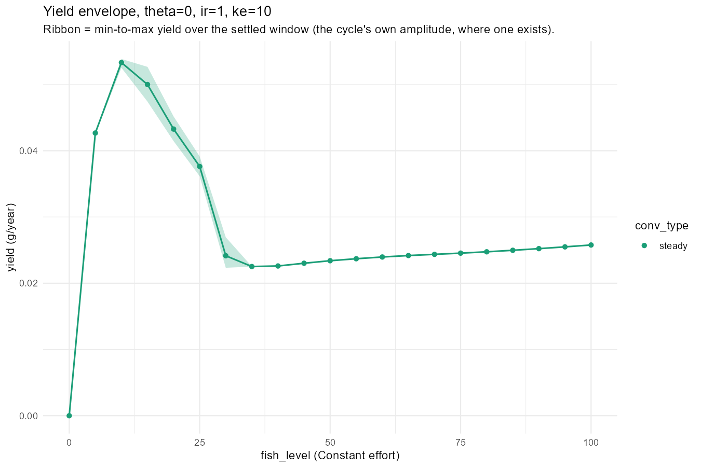
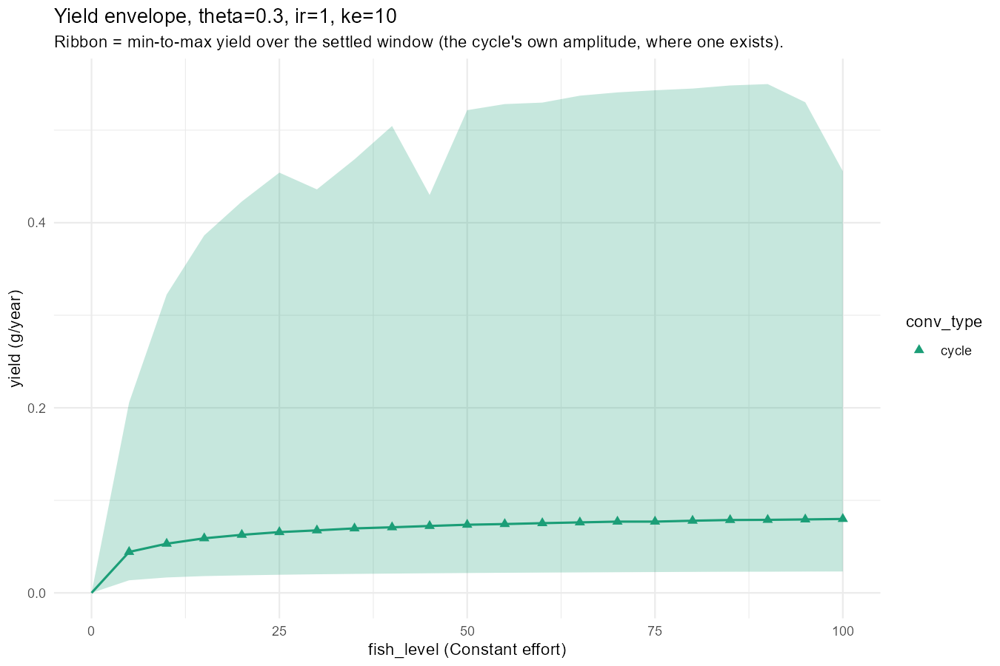
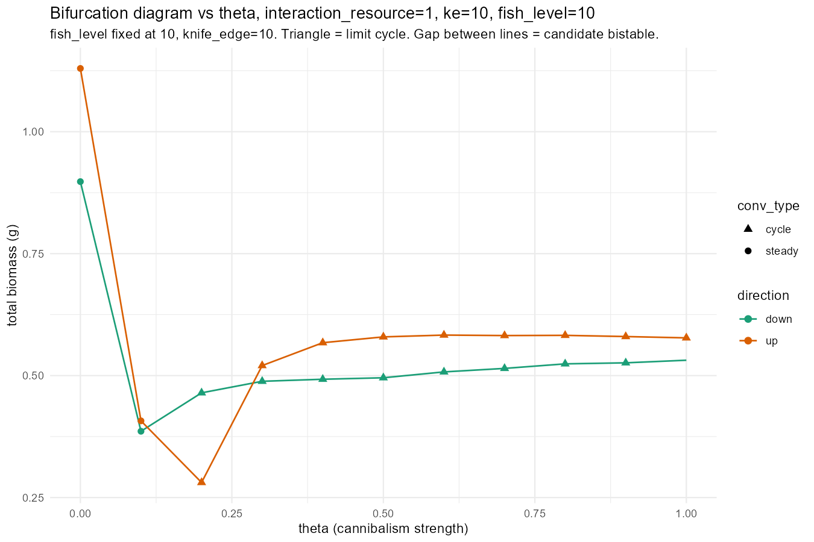
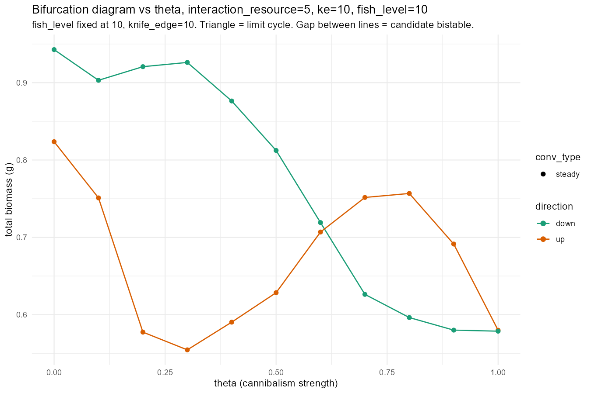

Day 41 closed by hand-checking that theta=0, interaction_resource=1, knife_edge=10 is genuinely bistable under Constant fishing, and queuing an overnight sweep to find out whether that was a corner-case curiosity or a global feature. This post reports on that sweep while it’s still running – 37 of 48 combinations complete as of writing – focused on knife_edge=10, this project’s own default gear width: bistability shows up there too, though less often than at narrower gear, and a second, previously undocumented route to oscillation shows up at narrower gear still but not, so far, at this default width.
Author
Samia
Published
August 18, 2026
The Brief
Day 41’s own Section 8 found, by hand, that theta=0 (cannibalism removed entirely), interaction_resource=1, knife_edge=10 is genuinely bistable under Constant fishing – two different stable equilibria coexisting at the same effort, confirmed via hysteresis rather than inferred from a convergence-time proxy. Its own “What’s Next” queued an overnight sweep (item 9) to answer the obvious next question: is that a theta=0-specific curiosity, or a feature of this model more broadly? Every collapse and MSY finding across this whole project, theta=0.3/interaction_resource=3 included, has only ever swept Constant effort in one direction – upward, from the unfished branch – so if bistability turns out to be common, some of that earlier work may have only ever seen one of two coexisting branches.
This post is being written while that sweep is still running: 37 of 48 (theta, interaction_resource, knife_edge) combinations are complete as of writing, 11 of theta=1’s own 12 combinations still queued. Everything below is a progress report on genuinely partial data, not a finished result – flagged as such throughout, not glossed over. The sweep itself still covers knife_edge in {5, 10, 15}, but the discussion and figure below are restricted to knife_edge=10 – this project’s own default gear width since Day 20 – rather than spreading across all three: the two phenomena below turn out to behave quite differently as gear width changes, which is exactly why one representative width, looked at properly, tells a cleaner story than three panels competing for attention.
Section 1: The Overnight Sweep, So Far
The grid: theta in {0, 0.3, 0.7, 1}, interaction_resource in {1, 2, 3, 5}, knife_edge in {5, 10, 15} (knife_edge=3 excluded – this project’s own earlier sweeps found it collapses almost everywhere regardless of theta/ir, which is not informative for a bistability screen that needs two surviving branches to compare). At each combination, both an upward Constant-effort sweep (fish_level10, 20, 30, 50, 100, chained – each effort seeded from the previous one, matching Section 8’s own convention) and a downward one (converged at fish_level=100 first, then stepped down through the same values), comparing the two paths at each shared effort. knife_edge=10 below is this project’s own default gear width; the sweep also covers 5 and 15, mentioned only where they change how knife_edge=10 itself should be read.
theta=0, knife_edge=10: every interaction_resource panel shows the same fold shape – up branch (orange) holds high, drops sharply between fish_level=20 and 30, down branch (green) declines steadily throughout. The gap is present everywhere but narrowest by fish_level=100.
theta=0.3, knife_edge=10: interaction_resource=1 and 2 cycle (triangles) at every effort level with almost no up/down gap – a single shared limit cycle, not two coexisting states. interaction_resource=3 shows a modest, closing gap. interaction_resource=5 is the strongest bistable case at this gear width: the down branch sits far above the up branch at every effort tested, both well above the unfished reference (fraction_of_unfished > 1 throughout).
theta=0.7, knife_edge=10: interaction_resource=1 cycles with the branches essentially on top of each other, same as theta=0.3. interaction_resource=5 again stands out, with a large gap at low effort that narrows steadily but hasn’t fully closed by fish_level=100.
Bistability shows up at knife_edge=10 too, not just at the narrower gear Section 8 originally tested it on – 30 of 60 effort points tested so far (50%) show a >5% relative gap between the up and down branch. It isn’t uniform across theta, though: at fixed knife_edge=10, the gap shrinks steadily as cannibalism strength rises – bistable at 16 of 20 points (80%) at theta=0, 9 of 20 (45%) at theta=0.3, and 5 of 20 (25%) at theta=0.7 (theta=1 not yet run). Widening the gear further makes it rarer still (6 of 60 points at knife_edge=15, across the same three theta values) and narrowing it makes it far more common (52 of 61 at knife_edge=5) – so bistability itself isn’t tied to one particular gear width, it’s present across the range tested, just at a rate that depends heavily on both theta and gear width together.
Looking at the actual shapes rather than just the pass/fail count sharpens this: at theta=0 every interaction_resource panel shows the same fold – the up branch holds near its unfished level, drops sharply somewhere between fish_level=20 and 30 (exactly where Section 8’s own fine bracket placed the jump), and the down branch declines smoothly throughout, sitting below the up branch at every point but converging toward it by fish_level=100. At theta=0.3 and 0.7, interaction_resource=5 is the standout: at theta=0.3 the down branch starts at fraction_of_unfished=2.02 against the up branch’s 1.17 (a gap of 73% of the up branch’s own value) and is still 5% apart by fish_level=100; at theta=0.7 the same panel opens at 1.00 vs 0.65 and narrows but does not fully close either. Both branches sitting above 1 for long stretches is this project’s own already-documented cultivation effect (Day 40’s theta=0.7/interaction_resource=5 was called “the most extreme cultivation-effect regime found in this project”) showing up here entangled with bistability – fishing pushing the population past its own unfished reference biomass, on both branches, not just one.
The more surprising result from Day 41 – fishing alone inducing genuine oscillation with no cannibalism in the model at all – does not show up at knife_edge=10 in the data so far. Every theta=0 combination tested at knife_edge=10 (interaction_resource 1, 2, 3, 5) converges to a plain fixed point (conv_type="steady", all circles in the first figure) at every effort level from 10 to 100, both directions. That finding turns out to be specific to the narrower knife_edge=5 gear tested in the same sweep – all 23 of the theta=0 rows anywhere in the sweep that converge to a genuine limit cycle are at knife_edge=5; none at 10 or 15. Read the other way round, this is actually a cleaner result than it first looks: it says the fishing-induced route to oscillation needs a sufficiently narrow gear cutoff to appear at all, consistent with the mechanism this project has hypothesised for it (Datta, Delius and Law 2011: narrow diet breadth is destabilising for this class of equation – a sharp enough gear cutoff plausibly acts as its own destabilising filter on the size spectrum, the same way a narrow predation kernel does). It is not, on this evidence, a general feature of Constant fishing independent of gear shape.
The only cycling that does show up at knife_edge=10 in the data so far is the already-known cannibalism-driven kind: theta=0.3 and theta=0.7 at interaction_resource=1 both cycle (triangles) at every effort level tested, 10 through 100, both directions – not a transition partway through the sweep, but oscillating from the unfished reference state itself. That is exactly Section 8’s own finding rediscovered from the other side: remove cannibalism (theta=0) at this gear width and oscillation stops; put it back and it returns. Notably, these cycling panels show almost no gap between up and down – both directions land on what looks like the same limit cycle, unlike the fixed-point bistability seen elsewhere in the same figure, so cycling and bistability don’t appear to coexist at the same point in this data. The genuinely new fishing-induced mechanism is real, but on this evidence it belongs to narrower gear specifically, not to knife_edge=10.
(For completeness: 8 rows across the full sweep show conv_type="extinction", all at interaction_resource=1, knife_edge=5, fish_level=100, consistent across every theta tested so far and both directions. That’s this project’s own already-known collapse boundary reconfirming itself, not a new finding, and doesn’t touch knife_edge=10.)
What this isn’t yet: a finished result. theta=1 hasn’t run at any gear width. The bistability numbers above are a coarse 5-effort-point grid, not the kind of fine bracket Section 8 used to confirm the original theta=0 case – some of the flagged knife_edge=10 points could be steep-but-continuous rather than genuinely bistable once looked at more closely, the same distinction Section 8 itself had to rule out by hand. And the absence of theta=0 cycling at knife_edge=10 is an absence in a five-point effort grid, not a proof it can never happen there – a finer grid could still turn up a narrow window this coarse sweep stepped over.
The code. These figures come from finding_jams/40_changed_mort_experiments.R’s own Section 19, which reads day41_bistability_sweep.csv fresh and plots fraction_of_unfished against fish_level for each theta, filtered to knife_edge_size=10 and faceted by interaction_resource, with point shape carrying conv_type:
theta=1 will render the same way once knife_edge=10 has data for it – Section 22 (queued, not yet run) fills in just the 4 missing theta=1/knife_edge=10 combinations rather than waiting on the rest of the overnight grid, and rerunning this loop afterwards is the only step needed.
Section 2: Yield Envelopes – A Hidden Peak Inside the Cycle
Every yield number in this project so far, back through Sections 17c/17d/18, comes from reading getYield() off a single settled MizerParams object. That’s exact for a genuine fixed point, but for a limit cycle it’s only the yield at whatever arbitrary phase the run happened to stop on – not the cycle’s own range. Section 20 fixes that directly: return_sim = TRUE keeps the whole trajectory, so the min and max yield over the settled window can be read off properly, on a fine fish_level grid (0 to 100, step 5) for two knife_edge=10 cases – theta=0/interaction_resource=1 (a fold, no cycling anywhere) and theta=0.3/interaction_resource=1 (cycling at every effort level tested).

theta=0, ir=1, ke=10: every point is steady, so the min-max ribbon is essentially zero width and the line alone tells the story – a genuine interior peak of 0.053 g/year at fish_level=10, a dip to ~0.0225 around fish_level=35-40, then a slow, real rise back to 0.0258 by fish_level=100. This sharpens Section 17c’s own single-point read of the same shape (peak 0.0514 at fish_level=9, minimum 0.0223 at fish_level=30, 0.0272 at fish_level=100) onto a proper fine grid instead of 11 hand-picked points.

theta=0.3, ir=1, ke=10: cycling from fish_level=5 up (fish_level=0 doesn’t fully converge within this section’s t_max=100 – expected, since this project has repeatedly found the unfished reference itself can take close to 30 years to settle, and yield is trivially 0 there regardless). The mean line (solid) looks unremarkable – a smooth, saturating rise from 0.044 to 0.080, no visible peak, exactly the “monotonic, no peak” verdict this project has reached for several theta/ir combinations using single-point yield. The max envelope tells a completely different story.
The second figure is the real finding here. The mean-yield line alone would say this regime never turns over in [0,100] – consistent with, and by the same method as, several other “no peak found” verdicts already in this project’s own record (Day 41’s own What’s Next items 0/0b flagged exactly this pattern for interaction_resource=1.3 and theta=0.5/interaction_resource=2). But the max-yield envelope climbs far more steeply than the mean, wobbles, and peaks at fish_level≈85-90 around 0.55 g/year – nearly 7x the mean at that point – before dropping back to 0.46 by fish_level=100. That is a genuine interior peak, entirely invisible to the single-point-per-effort method used everywhere else in this project. The min-yield envelope, meanwhile, stays low and barely moves (0.014 to 0.023 across the whole range) – in this regime, extra fishing effort does almost nothing for the worst moments of the cycle; every bit of extra catch it buys shows up at the cycle’s peak, not its baseline. Practically, a fishery timed to harvest during the population’s peak-biomass phase would see a real sustainable-yield-like optimum around fish_level=85-90 that a naive mean-yield analysis completely misses.
What this isn’t yet: only two examples, both interaction_resource=1 at knife_edge=10 – one fold, one cycle. Whether the same “mean hides a real peak” pattern holds for the strongly bistable interaction_resource=5 cases from Section 1, or for cycling at narrower gear, is untested. The fish_level=0 row reading conv_type="not_converged" is a boundary artefact of this section’s own t_max=100 (shorter than the 150 used elsewhere in this file) rather than a real finding – yield is exactly 0 there by definition regardless of convergence, so it doesn’t affect anything above.
Section 3: Bifurcation Diagrams in Theta – A Crossing Fold
Section 1’s own bistability numbers came from discrete theta ∈ {0, 0.3, 0.7} points – three snapshots, not a curve. Section 21 sweeps theta itself as the bifurcation parameter instead of fish_level, holding knife_edge=10 and fish_level=10 fixed (chosen because Section 1’s own figures showed the widest up/down gaps sitting at low effort). Because theta is baked into the model’s own interaction matrix rather than being a plain argument to projectToSteady(), each step rebuilds anchovy_params() at the new theta and carries the previous step’s converged abundance state across via initialN()<-/initialNResource()<-, chaining across a theta step the same way Section 18 chains across an effort step. Two examples, chosen directly from Section 1’s own discrete points: interaction_resource=1 (the cycling case) and interaction_resource=5 (the strongest bistable case found so far).

interaction_resource=1, ke=10, fish_level=10: biomass roughly halves already between theta=0 and theta=0.1 (0.90-1.13 down to ~0.40, both directions), a much sharper drop than the coarse {0, 0.3, 0.7} grid suggested. Cycling switches on at theta=0.2, right where the up branch (orange) shows an unexplained dip to ~0.28 before recovering and crossing above the down branch by theta=0.3. From 0.3 to 1.0 both branches cycle, roughly parallel, up consistently ~5-11% above down – a real but much smaller gap than Section 1’s own text implied when it called the two branches “essentially on top of each other.”

interaction_resource=5, ke=10, fish_level=10: every point is steady – no cycling anywhere in this theta range. The down branch (green) starts highest, stays roughly flat through theta=0.3, then declines steadily to meet the up branch at theta=1. The up branch (orange) does the opposite: it drops to its own minimum at theta=0.3, then climbs to a peak around theta=0.7-0.8, before falling to meet down at theta=1. The two branches cross around theta≈0.6 – “up” and “down” do not correspond to a fixed high state and low state, only to which direction the chain came from.
The interaction_resource=5 panel is the headline result. It confirms what Section 1’s own three-point grid could only flag as a possibility – a genuine non-monotonic bistability, peaking hard at theta=0.3 (0.93 vs 0.55, a 70% relative gap, matching what the coarse grid already picked out as the standout candidate) rather than shrinking steadily as cannibalism strength rises. The crossing itself is worth being precise about: because theta is the actual swept axis here, any nonzero gap between the two chains at the sametheta value is direct, immediate evidence of two coexisting stable states at that exact parameter combination – there is no “maybe it’s just a steep continuous decline between grid points” ambiguity to rule out separately, the way there was for the fish_level sweeps (Day 41 Section 8’s own fine-bracket check existed precisely to close that gap). Both chains here were run to convergence at literally the same (theta, interaction_resource, knife_edge, fish_level); a nonzero difference can only mean coexisting attractors.
The interaction_resource=1 panel’s theta=0.2 dip is flagged deliberately rather than explained away: it could be a genuine transient or resonance effect right at the Hopf-like onset of cycling, or it could be a convergence artefact of this section’s t_max=80 cap catching the trajectory mid-transition from a decaying spiral to a settled cycle. Nothing in the data collected so far distinguishes those two readings.
What this isn’t yet: one effort level, one gear width, two interaction_resource values. The crossing shape found at interaction_resource=5 could look different at other efforts or gear widths, and nothing here is a getStability()-based confirmation – same convergence-based hysteresis standard used throughout this project, not the stronger spectral-radius one.
What’s Next
Finish the sweep.theta=1’s own 12 combinations are still queued – whether the pattern found so far (more bistability at smaller gear, present across every theta tested) holds there too, or changes, isn’t known yet.
Once complete, revisit the fine-bracket-and-hysteresis standard Section 8 set for the theta=0 case on a handful of the most striking new candidates from this coarser screen – at knife_edge=10 specifically, theta=0.3/ir=5 and theta=0.7/ir=5 are the widest gaps found so far (73% and 54% relative, respectively, at fish_level=10), on top of theta=0/ir=3/ke=5 and theta=0/ir=5/ke=5 from the narrower gear, and whichever theta=1 combinations turn out comparably wide – a 5-point coarse grid flags candidates, it doesn’t confirm them to the same standard Day 41 set for the original finding.
Characterise the fishing-induced-oscillation mechanism directly, not just note that it happens: pull the size spectrum and biomass flux (Section 6’s own tools, Day 41) on a theta=0 case on either side of its own steady-to-cycle transition, to see whether the same kind of jam/choke-point structure that this project has traced through cannibalism removal shows up here too, driven by gear selectivity instead.
Re-examine whether earlier findings in this project need a second look. Every knife_edge sweep in this project so far – Section 3’s own overnight collapse grid, Section 5’s redo, the fine sweep behind the theta=0.3/interaction_resource=3 MSY discovery itself – has only ever tested one direction. This sweep’s own headline number, 69% of tested combinations showing bistability, is high enough that it’s worth directly checking whether any of those earlier results would look different approached from above rather than assumed unaffected.
The “normal” carryover from Day 41, still open:
Confirm theta=0.3/interaction_resource=3 properly (fine effort grid, genuine oscillation check) before building the threshold-schedule work on top of it.
Once confirmed, run the peaks/troughs threshold schedule on that regime’s own Constant-effort MSY – the first floor in this project that would mean what the schedule comparisons have always been trying to test.
The second-order-scheme diagnostic sweep (Day 41’s own item 7) – does tr_bdf2’s incompatibility with this project’s custom resource dynamics show up everywhere, or only in specific regions.
Map the lower edge of the original theta=0/ir=1/ke=10 bistable window, and get a getStability()-based confirmation of the fold rather than relying on convergence-time/hysteresis alone.
Verify the theta=0.2, interaction_resource=1 dip (Section 3) with a finer grid around it (theta = 0.12, 0.15, 0.18, 0.22, 0.25) and a longer t_max – distinguish a genuine transient/resonance effect at the onset of cycling from a convergence artefact of the t_max=80 cap used there.
Extend Section 20’s min/max-envelope technique to the cases that matter most for it: interaction_resource=5 (the strongest bistable case, both branches), and at least one narrower-gear cycling case, to see whether the “mean hides a real interior peak” pattern found at theta=0.3/ir=1/ke=10 is general or specific to that one point. If it is general, several “no peak found” verdicts already on record in this project (Day 41’s own items 0/0b) were reached with a method now known to be capable of missing exactly this kind of peak.
Run Section 22 (queued, not yet executed) to complete the theta=1/knife_edge=10 fishing-effort bifurcation diagram, and extend Section 21’s theta-sweep to other fish_level/knife_edge combinations to see whether the interaction_resource=5 crossing-fold shape is a fixed-effort curiosity or holds more generally.